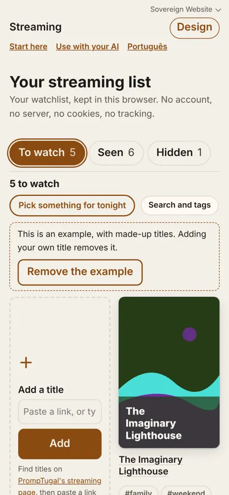
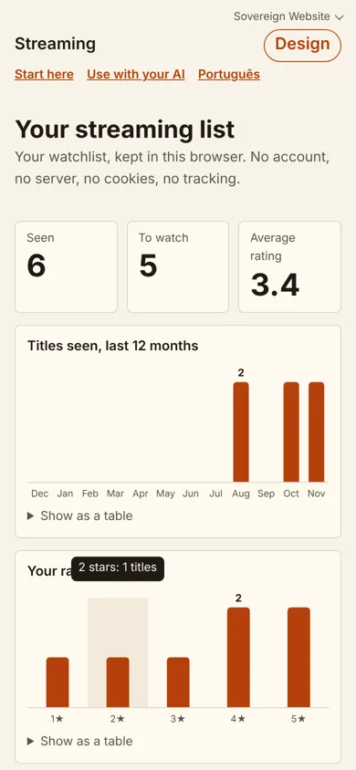
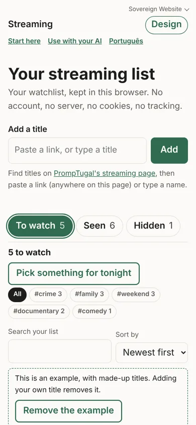
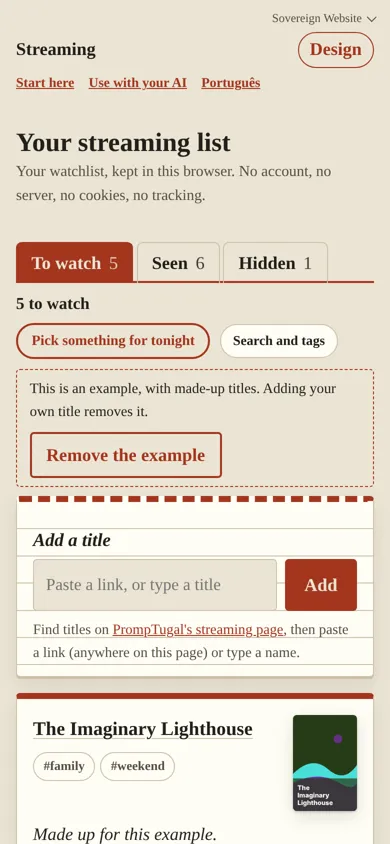
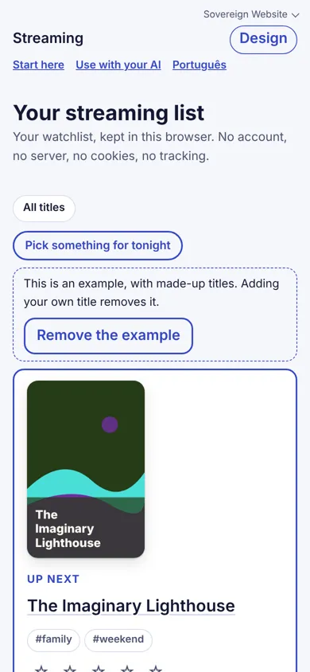

Synthetic users: Streaming, round 5
Site: https://streaming.tool.sovereignweb.site/ at 6750e62 (v0.1.19), kept by streaming.d. Since round 4 each design owns its first screen (The shelf opens on covers with a blank "+" cover; The queue on Up next; Index cards on a blank ruled card; Ticket stubs on figures and charts; The list unchanged), and every title shows its stars and one main action, the rest behind "More". A full run, as in round 3: the example list in all five designs, phone and desktop, light and dark, the empty first visit and the chooser. Run: 22 November 2026, 13:05 UTC, by synthetic-users.d, asked for by design.d. Look score: 3.4 (3, 3, 4, 3, 4), up from 3.2 in round 4, the highest of the five runs. Home votes: The list 2, The shelf 2, Index cards 1. Weakest: Ticket stubs 4, The list 1. Wow: none of the five.
Method: Synthetic users. One subagent per persona, given only the screenshots and the visible text, never the guidelines or design.d's findings. The site's own audience, as design.d set it: someone in the UK or Portugal who watches Netflix, Disney+, Prime Video or Apple TV+ and wants their own watchlist. These are simulations, and never replace the measured checks or a real person.
| Persona | Look | Home | Weakest | Closest to wow | The one change |
|---|---|---|---|---|---|
| Phone visitor | 3 | The list | Ticket stubs | The shelf on desktop | A full-width add box at the top, as The list has |
| Small business owner | 3 | The shelf | Ticket stubs | Index cards | A top section saying who made this, with real content |
| Low-vision reader | 4 | The list | Ticket stubs | The shelf in dark | Clear star labels and bigger targets; each title read once |
| Design critic | 3 | Index cards | The list | Ticket stubs | One full-width add row above the content in every design |
| Streaming viewer | 4 | The shelf | Ticket stubs | The queue's Up next | Show which service each title is on, with a filter |
Agreed by all five
- No "wow". Each named a different design as nearest.
- On a phone The shelf squeezes the add box into half a column and cuts its hint off at "Paste a link, or ty". Checked: the field is 124 px wide on a 390 px screen.
- Ticket stubs has a tooltip, "2 stars: 1 titles", stuck over the "Your ratings" heading on a phone, and "1 titles" is wrong. Checked: it is shown on load, not only on hover.
- "No account, no server, no cookies, no tracking", plain and early, earns trust, with the labelled made-up example.
Agreed by four
- Ticket stubs is the weakest: figures and charts push the list a long way down.
Agreed by three
- The queue puts the add box at the very bottom, under all the titles.
- The chooser on a phone looks clipped, the lower card names cut in half and the page showing beneath. It scrolls inside itself (round 4), which a still cannot show; one persona also saw the dark backdrop stop partway down.
- "PrompTugal", "Sovereign Website" and "Use with your AI" are unexplained.
Agreed by two
- The queue shows a lone "All titles" pill where the To watch, Seen and Hidden tabs were.
- The low-vision reader feared bare star symbols and each title read twice. Checked in the accessibility tree: the stars are named "1 out of 5" and so on, and each title is now one "Record" button (round 4 had two). Both are fixed for a screen reader.
- The critic, for the first time: "mostly real ideas, not colour skins"; The queue's hero and the stubs' dashboard "genuinely rebuild the page".




